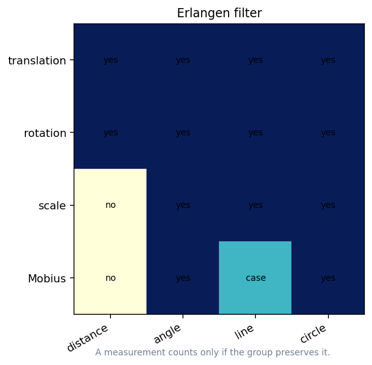

Guiding Principle
Start with model space S and transformation group G. A measurement belongs to the geometry only when every G-move leaves it unchanged.
geometry = (space, allowed transformations)
The filter makes visual sameness testable: apply legal moves and inspect what stays stable.